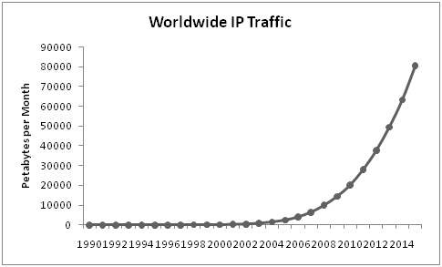
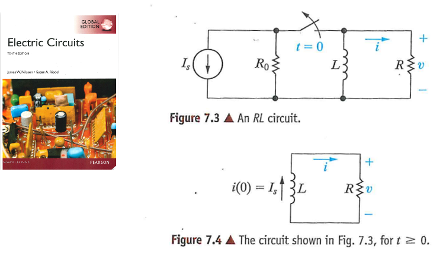
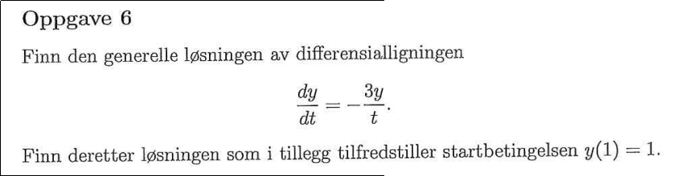

MAT100 for ELK og KOM
Uke 12
04.11.2015
Alexander Lundervold
institutt for data- og realfag
Sist uke
- Integrasjonsteknikker: delbrøkoppspalting
- Anvendelser av integralet: arbeid
- Uegentlige integral
$$\int_{-\infty}^{\infty} f(x) dx, \qquad \int_{-1}^1 \frac{1}{x^2} dx$$
Denne uken
- Numerisk integrasjon
- Differensialligninger
MAT100
- Bakgrunnsmateriale: Funksjoner, grenser, kontinuitet
- Derivasjon
- Integrasjon
- Differensialligninger

Diffligninger: motivasjon
Mer motivasjon
Eksempler på bruk av diffligninger:
- Dynamikk: Bevegelse til objekter og partikler
- Dynamikk: Bevegelse til objekter og partikler
- Dynamikk: Fjær
- Computer aided engineering
- Fluid-dynamikk
- Elektromagnetisme: Maxwells ligninger
- Biologi: Populasjonsdynamikk
- Biologi / Medisin: Fysiologi (muskelsammentrekking)
- Biologi / Medisin: Hjertedynamikk
- Fysikk i dataspill

Kilde
Fjær og lodd:

Kilde

Kilde
Fluid-dynamikk, turbulens:


Kilde 1, kilde 2
{kind=link}
{kind=link}
Maxwells ligninger i elektromagnetisme
| Gauss' lov | $\nabla \cdot \mathbf{E} = \frac{\rho}{\epsilon_0}$ |
| Gauss' lov for magnetisme | $\nabla \cdot \mathbf{B}$ |
| Maxwell-Faraday-ligningen | $\nabla \times \mathbf{E} = -\frac{\partial \mathbf{B}}{\partial t}$ |
| Ampères lov | $\nabla \times \mathbf{B} = \mu_0 \left(\mathbf{J} + \epsilon_0 \frac{\partial \mathbf{E}}{\partial t}\right)$ |
Rovdyr-byttedyr:

Kilde
Muskelsammentrekking:

Kilde
Hjertedynamikk:

Kilde
Dynamikk og fysikk i dataspill og animasjon
Benytter også mye lineær algebra (MAT106)
Eksponensiell vekst

Kilde 1 Kilde 2 Kilde 3
Diffligninger i ELE100

Fysikk:
- Ohm: Motstanden gir spenningsfall på $RI$
- Spole gir spenningsfall på $L \cdot \frac{dI}{dt}$
- Kirchhoff: Summen av spenningsfall er lik spenning fra generator
Modell: Får diffligning for strømmen $I(t)$:
$$ L \frac{dI}{dt} + RI = 60\sin(20t).$$
Eulers metode
{kind=link}
Ekstra
Eksamen V2015, Oppgave 6
{kind=link}